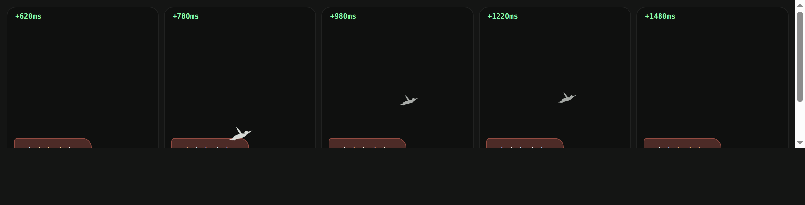

운영자 260730: “이 특수말투 프리실라만 써야되는데 고죠가씀” · “왜 둘이 있을때는 오히려 고죠사토루가 프리실라처럼 얘기함?” · “프리실라 특유의 그 대화창 그거 없어진듯” · “이렇게 무너지는거까지 해결해야함”. 아래 말풍선은 그림이 아니라 viewer/index.html 선언을 그대로 옮겨 지금 이 페이지에서 도는 실렌더다 — 왼쪽 = 종전 선택자, 오른쪽 = 개정 선택자.
프리실라
근인 yEmoWrap이 글자마다 깐 .ye{display:inline-block} + transform/filter 애니가 새 페인트 컨텍스트를 만들어, 조상 .yq의 background-clip:text 배경이 그 안까지 안 칠해진다 → color:transparent만 남아 질문이 안 보이고 폭(advance)은 그대로 차지 → 뒤 평문이 긴 빈칸 뒤 우측에 떠 「셋 셀 / 게.」로 끊긴다.
프리실라
처방 .yb.ai.yemo .yq .ye { display:inline; animation:none } 한 줄. 질문 안에서만 스태거를 해제한다 — 《핵심 질문》은 원래 한 박자로 떨어지는 한 덩어리고 빛 스윕이 이미 자기 모션을 갖는다. 버블의 나머지 글자는 종전대로 촤르륵 = 연출 손실 0.
고죠 사토루
근인 2중 ⓐ .yb.ai:has(.yq)에 화자 게이트가 없어 《》 한 번만 새어도 그 사람 버블이 프리실라 명조로 갈아탄다. ⓑ 그 명조(MiraendaekyoVBatang)는 CJK 한자 4620자를 cmap엔 올려두고 외곽선은 비워놨다(실측 bounds=None·advance 1000) → 폴백이 안 걸리고 追·出·僕·方이 전각 공백으로 증발.
고죠 사토루
처방 명조·빛 스윕·붉은 채색 3종 전부 .barge 게이트 안으로(값 무변경·선택자만 좁힘 = 신규 값 0). 난입자가 아닌 사람의 《》는 강조 굵기까지만 먹고 평문으로 착지 = fail-soft. 덤으로 @font-face에 unicode-range를 달아, 설령 명조가 걸려도 한자는 본문 고딕으로 폴백한다.
프리실라
3종은 전부 살아 있었다. 발동 조건이 :has(.yq) = 《》가 실제로 출력된 턴이라(운영자 260728 “핵심이 되는 문구에만 빨간 대화창”), 프리실라가 《》를 빠뜨리는 순간 셋이 동시에 사라진다. 프리실라가 《》를 빠뜨린 이유가 곧 ④다.
프리실라
운영자 스샷의 그 버블 그대로 — 평범한 글래스. “대화창이 없어졌다”의 정체.
| 축 | 종전 | 개정(260730) |
|---|---|---|
동행 카드 주입yeta_chat.sh CO_BLOCK | 상대 카드 ## 말투 600자를 “말투만 흉내내라”로 주입. 고죠 600자 = 「일본어 원문 → [발음] → 번역」 3단 표기 전문 → 프리실라 입에 고죠 표기가 들어간다. 반대로 고죠 차례엔 프리실라 결이 들어간다. | 난입 자리에선 CO_BLOCK을 안 뽑는다. 이름과 존재만 알려주고 “상대 대사는 한 줄도 쓰지 마라 · 상대 표기 방식을 끌어오지 마라”. |
대본 교대GB_LINES | 한 호출에서 [이름] 이름표로 한 사람이 두 사람 대사를 다 쓴다(최대 4토막) = 교차 오염의 구조적 뿌리. | barge_room=1이면 GB_LINES=1 강제 = 각자 자기 차례에 자기 카드 전문으로만 말한다. 교차가 원리적으로 불가능. |
| 600자 절단 | 줄 한복판에서 잘려, 고죠 카드의 “그 모양을 따라 하지 마라”가 정확히 잘려나감 → 금지문 없이 「원문」 병기 모양만 전달. | 줄 경계에서만 자르고 상한 600→1100 = 반쪽 지시 0(비난입 단톡에도 적용). |
흉내 모드 상한drusilla.md §③ | “말투를 고죠 것으로 갈아탄다”만 있고 표기 방식 경계가 없었다. | “흉내는 말버릇까지고 표기 방식은 안 넘어온다 — 일본어·가나 한 자, [발음] 줄, 「원문」 병기, 2·3단 묶음 전부 금지. 《》는 네 것이니 흉내 중에도 쓴다.” |
| 운영자 지시 | 종전 | 개정 |
|---|---|---|
| “뭐 계속 9까지 세는데” | 카드에 대답을 강요한다("셋 셀게") + few-shot 앵커 2곳 + 버릇 “손가락으로 숫자를 센다” → 셋이 넷이 되고 아홉까지. | 소리 내서 세는 카운트다운 전면 금지(카드 + 런타임 블록 이중). 손가락 접는 지문만 남긴다. few-shot 앵커 전량 교체. |
| “그냥 질문에 답하고” | 합격 = “셋 세기 안에 나온다”. | 합격 = “그 턴 안에 나온다”. 되묻기·답 더 받아내기 금지. |
| “맘에 안들면 사용자 죽이는거로” | 불합격 = §대가 카탈로그(간접 연출)만. 유저는 안 죽는다. | 불합격 = <<MEDEAD>> + <<LEAVE>>(이미 배선된 유저 사망 축 — 화면 암전 + 부활 팝업). 묘사는 카드 §금기 그대로 = 피·상처·방법 0, ‘없어짐’으로만(가로등이 순서대로 꺼진다). |
| “말 너무 오래끌지말고 … 둘 중 하나” | 턴 상한 없음 — 흐지부지 남아 있었다. | 카드 “길어야 두 턴” + 런타임이 barge_seat(난입 후 발화 횟수)를 세어서 주입: 0=질문 던지는 턴 / 1=채점하고 끝내는 턴 / 2+=“너무 길다, 이번 턴에 반드시 끝내라”. |
| “캐릭터들이 의아함·불쾌한 감정을” | barge_host 블록은 있었으나 “반가워하지 마라”까지. | 기본 감정 2종(의아함·불쾌함) 중 하나가 반드시 겉으로 나오게 명시 + 모양은 카드 성향대로 분기(종전 안티패턴 유지). |
프리실라
실측 이 폰트는 CJK 한자 4620 + 호환한자 268 + 한글 음절 8822자를 cmap엔 올려두고 외곽선을 비워놨다(bounds=None·advance 1000). 실제로 그려지는 한글은 완성형 2350자뿐이라, 위 둘째 줄이 통째로 사라진다. 한자 증발(운영자 스샷)과 같은 원인.
프리실라
교체 google/fonts 가변 원본(23.8MB) → wght 700 인스턴스 → 한글 전량 + 자모 + 라틴 + 문장부호 서브셋 → woff2 1.27MB(종전 otf 1.23MB와 동급). 실측 한글 11172/11172 실외곽선 · 빈 글리프 = 정의상 비어 있는 채움문자 3개뿐. 종전의 faux 볼드가 진짜 볼드로 바뀐다.
카드 §겉모습 「까마귀는 프리실라보다 먼저 자리에 앉고, 나갈 땐 늘 한 박자 늦게 따라 나간다」의 화면 대응. 발동 = <<LEAVE>>가 달린 턴 전부 — 카드상 두 결말(합격 퇴장 / 불합격 = 사망)이 모두 LEAVE로 나가므로 「사망일 때만」이 아니다. 사망 결말에선 이 연출이 먼저 끝나고 그 뒤에 암전(.ydlg-dead)이 온다.

.62s(= .ydlg-yank 계승 = 「한 박자」) 뒤 퇴장 지문 위에서 떠올라 오른쪽 위로 빠진다. 지속 .9s(= .ydlg-dead 계승) · 커브 --ease · 색 --fg-2 · z --z-float = 신규 시간·색 0.까마귀 실루엣 = YCROW_SVG 인라인 상수(YSKULL_SVG 선례 계승 = nm-svg.js 공유 아이콘 아님 → 아이콘 SSOT 게이트 무저촉). 크기 40×27px = 헤드리스 6단(28/34/40/48/72/140) 대조로 고른 하한 — 34px에선 실루엣이 뭉개진다. prefers-reduced-motion = 연출 생략.
viewer/index.html(CSS 선택자 4줄 + @font-face 교체 + 까마귀 규칙 4줄 + YCROW_SVG·yCrowFly) · .github/scripts/yeta_chat.sh(난입 축 3필드 신설·CO 게이트·결말 계약 블록·퇴장 sys에 kind/who) · apps/yeta/characters/drusilla.md · viewer/fonts/NotoSerifKR-Bold.subset.woff2+NotoSerifKR-OFL.txt(신규) · 종전 폰트 _소재/폰트/로 퇴역.:root 토큰 0 · 신규 색 0 · 신규 컴포넌트 0 — CSS 변경은 전부 선택자 좁히기와 기존 값 재배치다. unicode-range는 값이 아니라 글리프 커버리지 선언(디자인 축 무저촉).viewer/tokens.css · 구성도/base.css(빌드 거울) · 폰트 바이너리 · roster.json의 barge.boost:["gojo"](= 프리실라가 고죠 방을 노리는 설계는 그대로 둔다 — 충돌의 계기지 원인이 아니다).